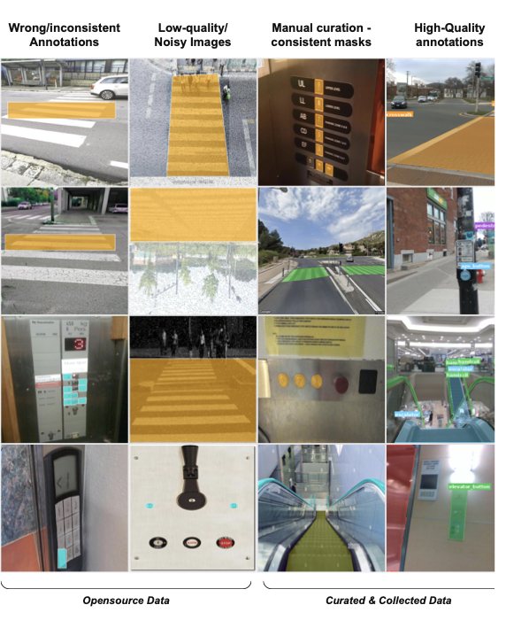
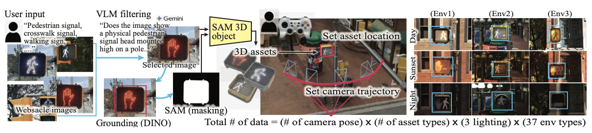
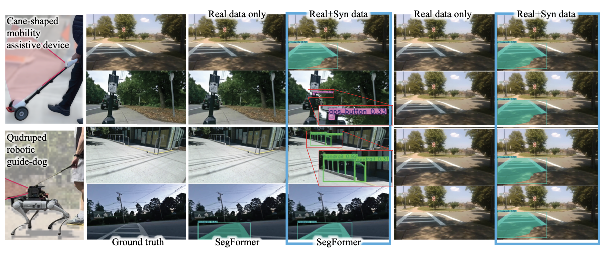

NavAble: A Large-Scale Dataset and Synthetic Data Generation Pipeline for Blind Navigation
NeurIPS 2026 ED Track
Abstract
Reliable recognition of accessibility-critical objects, such as accessible pedestrian signals, door-activation buttons, and handrails, is essential for technologies that support independent mobility for blind and low-vision (BLV) people. Yet these objects are often missing or underrepresented in existing vision datasets, and available data offer limited diversity, inconsistent annotations, and viewpoints that do not match assistive devices.
We introduce NavAble, a large-scale dataset and synthetic data generation pipeline for BLV navigation. NavAble combines curated open-source images with newly collected, densely annotated real-world data across 11 accessibility-critical categories. Its generator transforms web images into simulation-ready 3D assets and renders them in NVIDIA Isaac Sim under varied environments, lighting, and camera viewpoints, producing RGB images with rich ground-truth annotations.
We evaluate accessibility-object segmentation across multiple model architectures and study how synthetic supervision supports real-world generalization. Evaluation on a quadruped guide dog robot and a cane-shaped mobility-assistive device further examines transfer to the egocentric viewpoints encountered during navigation.
Key Contributions
- A dataset built around accessibility. Curated and newly collected real-world images with dense annotations for navigation-relevant infrastructure.
- A scalable synthetic data generator. An image-to-3D asset pipeline and Isaac Sim extension for varying object appearance, environment, lighting, and camera trajectory.
- Evaluation beyond a single viewpoint. Segmentation benchmarks and transfer evaluation on two different mobility-assistive robot platforms.
The NavAble Dataset
Three complementary data sources expand coverage of the objects that support everyday mobility decisions.
| Component | Images | Role |
|---|---|---|
| Curated real-world data | 36,466 | Existing sources remapped to a shared class taxonomy. |
| Newly collected real-world data | 5,581 | Dense annotations from indoor and outdoor navigation settings. |
| Synthetic data | 452,704 | Controllable appearance, lighting, environments, and viewpoints. |
Counts reflect the public dataset release. The collected real-world test split contains 1,482 images.
APS: accessible pedestrian signal. Turnstile is synthetic-only in the current release; real-world evaluation uses the 10 shared classes.

From Images to Synthetic Training Data
Specify an object, place an asset, and record a camera trajectory. Replay that trajectory across object variants, lighting conditions, and environments.

- Find and filter. Retrieve candidate object images and filter unsuitable examples with a vision-language model.
- Reconstruct assets. Localize and segment objects, then reconstruct textured 3D assets with SAM 3D Objects.
- Configure a scene. Set the asset placement and record a reusable camera trajectory.
- Render variations. Generate RGB, semantic segmentation, depth, surface normals, and 2D/3D bounding boxes.
Video
Lighting variation, annotation modalities, and a nine-object montage from the synthetic data generator.
The video first shows a pedestrian-signal button under changing illumination, then paired renderings and annotations, and finally nine examples of accessibility-related infrastructure.
Segmentation Evaluation
We benchmark SAN, Mask2Former, SegFormer, DeepLabv3+, and EncNet on a held-out real-world test set. Four training configurations separate the effects of newly collected data, curated data, and synthetic supervision.
The results show architecture-dependent effects: synthetic augmentation improves the evaluated transformer and mask-classification models, while the CNN baselines do not improve over their real-only baselines. This comparison helps identify where synthetic diversity is useful and where domain differences remain challenging.
Transfer to Assistive Robots
From dataset evaluation to the viewpoints of a quadruped guide dog robot and a cane-shaped mobility-assistive device.

Using SegFormer on both platforms, we evaluate whether improvements transfer to previously unseen device viewpoints. Synthetic supervision improves mean IoU and precision on both embodiment splits, with benefits for navigation-relevant objects such as pedestrian signals, APS buttons, and handrails.
These experiments evaluate perception transfer. Reliable closed-loop navigation remains an open direction, alongside broader class coverage and more geographically diverse real-world data.
BibTeX
If you use NavAble in your research, please cite our paper.
@inproceedings{hwang2026navable,
title = {{NavAble}: A Large-Scale Dataset and Synthetic Data Generation Pipeline for Blind Navigation},
author = {Hwang, Hochul and Monon, Jahir Sadik and Yang, Soowan and
Patel, Shiven Umeshbhai and Nguyen, Anh Nhat Hong and Nguyen, Kien and
Garg, Keshav and Gage, Dylan and Hordofaa, Duretti and
Anjna, Anshu and Ohn-Bar, Eshed and Kim, Donghyun},
booktitle = {Advances in Neural Information Processing Systems},
year = {2026},
url = {https://neurips.cc/virtual/2026/loc/sydney/poster/138983}
}